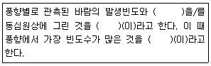
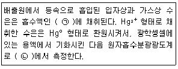
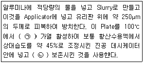
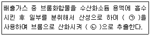
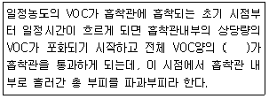
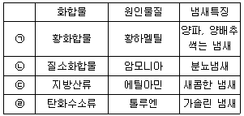
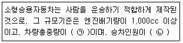
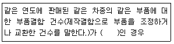
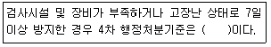
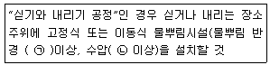

대기환경산업기사 (2019-04-27 기출문제)
1과목: 대기오염개론
1. 2000m에서의 대기압력이 820mbar이고, 온도가 15℃이며 비열비가 1.4일 때 온위는? (단, 표준압력은 1000mbar)
- 약 189K
- 약 236K
- 약 3⑤K
- 약 371K
(정답률: 59%)

2. 황화수소(H2S)에 비교적 강한 식물이 아닌 것은?
- 복숭아
- 토마토
- 딸기
- 사과
(정답률: 82%)
3. 다음 광화학반응에 관한 설명 중 가장 거리가 먼 것은?
- NO광산화율이란 탄화수소에 의하여 NO가 NO2로 산화되는 율을 뜻하며, ppb/min의 단위로 표현된다.
- 일반적으로 대기에서의 오존농도는 NO2로 산화된 NO의 양에 비례하여 증가한다.
- 과산화기가 산소화 반응하여 오존이 생성될 수도 있다.
- 오존의 탄화수소 산화(반응)율은 원자상태의 산소에 의하여 탄화수소의 산화에 비해 빠르게 진횅된다.
(정답률: 48%)
4. 엘니뇨(El Nino) 현상에 관한 설명으로 틀린 것은?
- 스페인어로 여자아이(the girl)라는 뜻으로, 엘니뇨가 발생하면 동남아시아, 호주 북부 등에서는 홍수가 주로 발생한다.
- 열대태평양 남미해안으로부터 중태평양에 이르는 넓은 범위에서 해수면의 온도가 평년보다 보통 0.5℃이상 높은 상태가 6개월 이상 지속되는 현상을 의미한다.
- 엘니뇨가 발생하는 이유는 태평양 적도 부근에서 동태평양의 따뜻한 바닷물을 서쪽으로 밀어내는 무역풍이 불지 않거나 불어도 약하게 불기 때문이다.
- 엘니뇨로 인한 피해가 주요 농산물 생산지역인 태평양 연안국에 집중되어 있어 농산물생산이 크게 감축되고 있다.
(정답률: 84%)
5. 다음 중 자동차 운행 때와 비교하여 감속할 경우 특징적으로 가장 크게 증가하는 것은?
- NOx
- CO2
- H2O
- HC
(정답률: 85%)
6. 다음 중 공중역전에 해당하지 않는 것은?
- 복사역전
- 전선역전
- 해풍역전
- 난류역전
(정답률: 77%)
7. 1985년 채택된 협약으로, 오존층 파괴 원인물질의 규제에 대한 것을 주내용으로 하는 국제협약은?
- 제네바 협약
- 비엔나 협약
- 기후변화 협약
- 리우 협약
(정답률: 86%)
8. 다음 물질의 지구온난화지수(GWP)를 크기순으로 옳게 배열한 것은? (단, 큰 순서＞작은 순서)
- N2O＞CH4＞CO2＞SF6
- CO2＞SF6＞N2O＞CH4
- SF6＞N2O＞CH4＞CO2
- CH4＞CO2＞SF6＞N2O
(정답률: 77%)
9. 오존(O3)에 관한 설명으로 옳지 않은 것은?
- 폐수종과 폐충혈 등을 유발시키며, 섬모운동의 기능장애를 일으킨다.
- 식물의 경우 고엽이나 성숙한 잎보다는 어린잎에 주로 피해를 일으키며, 오존에 강한 식물로는 시금치, 파 등이 있다.
- 오존에 약한 식물로는 담배, 자주개나리 등이 있다.
- 인체의 DNA와 RNA에 작용하여 유전인자에 변화를 일으킬 수 있다.
(정답률: 73%)
10. 가우시안 연기모델에 도입된 가정으로 옳지 않은 것은?
- 연기의 분산은 시간에 따라 농도가 기상조건이 변하는 비정상상태이다.
- x방향을 주 바람방향으로 고려하면, y방향(풍횡방향)의 풍속은 0이다.
- 난류확산계수는 일정하다.
- 연기 내 대기반응은 무시한다.
(정답률: 61%)
11. 유효굴뚝의 높이가 3배로 증가하면 최대착지농도는 어떻게 변화되는가? (단, Sutton의 확산식에 의한다.)
- 1/3로 감소한다.
- 1/9로 감소한다.
- 1/27로 감소한다.
- 1/81로 감소한다.
(정답률: 85%)
12. 다음은 바람과 관련된 설명이다. ()안에 순서대로 들어갈 말로 옳은 것은?

- 풍속-바람장미-주풍
- 풍향-바람분포도-지균풍
- 난류도-연기형태-경도풍
- 기온역전도-환경감률-확산풍
(정답률: 85%)
13. 악취(냄새)의 물리적, 화학적 특성에 관한 설명으로 옳지 않은 것은?
- 일반적으로 증기압이 높을수록 냄새는 더 강하다고 볼 수 있다.
- 악취유발물질들은 paraffin과 CS2를 제외하고는 일반적으로 적외선을 강하게 흡수한다.
- 악취유발가스는 통상 활성탄과 같은 표면흡착제에 잘 흡착된다.
- 악취는 물리적 차이보다는 화학적 구성에 의해서 결정된다는 주장이 더 지배적이다.
(정답률: 74%)
14. 다음 중 인체에 대한 피해로서 “발열”을 일으킬 수 있는 물질로 가장 적합한 것은?
- 바륨, 철화합물
- 황화수소, 일산화탄소
- 망간화합물, 아연화합물
- 벤젠, 나프탈렌
(정답률: 81%)
15. 다음 중 온실효과에 대한 기여도가 가장 큰 것은?
- CH4
- CFC 11 & 12
- N2O
- CO2
(정답률: 77%)
16. 직경이 25cm인 관에서 유체의 점도가 1.75×10-5kg/mㆍsec이고, 유체의 흐름속도가 2.5m/sec라고 할 때 이 유체의 레이놀드수(NRe)와 흐름특성은? (단, 유체밀도는 1.15kg/m3이다.)
- 2245, 층류
- 2350, 층류
- 41071, 난류
- 114703, 난류
(정답률: 76%)
17. 휘발성유기화합물질(VOCs)은 다양한 배출원에서 배출되는데 우리나라의 경우 최근 가장 큰 부분(총배출량)을 차지하는 배출원은?
- 유기용제 사용
- 자동차 등 도로이용 오염원
- 폐기물처리
- 에너지 수송 및 저장
(정답률: 81%)
18. 다음 역사적인 대기오염 사건 중 가장 먼저 발생한 사건은?
- 도노라사건
- 뮤즈계곡사건
- 런던스모그사건
- 포자리카사건
(정답률: 82%)
19. 실내오염물질에 관한 설명으로 옳지 않은 것은?
- 라돈은 자연계의 물질 중에 함유된 우라늄이 연속 붕괴하면서 생성되는 라듐이 붕괴할 때 생성되는 것으로서 무색, 무취이다.
- 폼알데하이드는 자극성 냄새를 갖는 무색기체로 폭발의 위험이 있으며, 살균 방부제로도 이용된다.
- VOCs 중 하나인 벤젠은 피부를 통해 약 50% 정도 침투되며, 체내에 흡수된 벤젠은 주로 근육조직에 분포하게 된다.
- 석면은 자연계에서 산출되는 가능고 긴 섬유상 물질로서 내열성, 불활성, 절연성의 성질을 갖는다.
(정답률: 77%)
20. “석유정제, 석탄건류, 가스공업, 형광물질의 원료 제조” 등과 가장 관련이 깊은 대기배출오염물질은?
- Br2
- HCHO
- NH3
- H2S
(정답률: 65%)
2과목: 대기오염 공정시험 기준(방법)
21. 자외선/가시선분광법에 관한 설명으로 거리가 먼 것은?
- 흡수셀의 재질 중 유리제는 주로 가시 및 근적외부 파장범위, 석영제는 자외부 파장범위를 측정할 때 사용한다.
- 광전광도계는 파장 선택부에 필터를 사용한 장치로 단광속형이 많고 비교적 구조가 간단하여 작업 분석용에 적당하다.
- 파장의 선택에는 일반적으로 단색화장치(monochrometer) 또는 필터(filter)를 사용하고, 필터에는 색유리 필터, 젤라틴 필터, 간접필터 등을 사용한다.
- 광원부의 광원에는 중공음극램프를 사용하고, 가시부와 근적외부의 광원으로는 주로 중수소방전관을 사용한다.
(정답률: 67%)
22. 휘발성유기화합물(VOCs) 누출확인을 위한 휴대용 측정기기의 규격 및 성능기준으로 옳지 않은 것은?
- 기기의 계기눈금은 최소한 표시된 노출농도의 ±5%를 읽을 수 있어야 한다.
- 기기의 응답시간은 30초보다 작거나 같아야 한다.
- VOCs 측정기기의 검출기는 시료와 반응하지 않아야 한다.
- 교정 정밀도는 교정용 가스값의 10%보다 작거나 같아야 한다.
(정답률: 62%)
23. 다음은 배출가스 중 수은화합물 측정을 위한 냉증기 원자흡수분광광도법에 관한 설명이다. ()안에 알맞은 것은?

- ㉠ 산성 과망간산포타슘 용액, ㉡ 193.7nm
- ㉠ 산성 과망간산포타슘 용액, ㉡ 253.7nm
- ㉠ 다이메틸글리옥심 용액, ㉡ 193.7nm
- ㉠ 다이메틸글리옥심 용액, ㉡ 253.7nm
(정답률: 67%)
24. 원자흡수분광광도법에 사용하는 불꽃 조합 중 불꽃의 온도가 높기 때문에 불꽃 중에서 해리하기 어려운 내화성산화물(Refractory Oxide)을 만들기 쉬운 원소의 분석에 가장 적합한 것은?
- 아세틸렌-공기 불꽃
- 수소-공기 불꽃
- 아세틸렌-아산화질소 불꽃
- 프로판-공기 불꽃
(정답률: 72%)
25. 배출가스 중 크롬을 원자흡수분광광도법으로 정량할 때 측정파장은?
- 217.0nm
- 228.8nm
- 232.0nm
- 357.9nm
(정답률: 55%)
26. 다음 중 분석대상가스가 이황화탄소(CS2)인 경우 사용되는 채취관, 도관의 재질로 가장 적합한 것은?
- 보통강철
- 석영
- 염화비닐수지
- 네오프렌
(정답률: 64%)
27. 굴뚝연속자동측정기 설치방법 중 도관 부착방법으로 가장 거리가 먼 것은?
- 냉각 도관 부분에는 반드시 기체-액체 분리관과 그 아래쪽에 응축수 트랩을 연결한다.
- 응축수의 배출에 쓰는 펌프는 충분히 내구성이 있는 것을 쓰며, 이 때 응축수 트랩은 사용하지 않아도 좋다.
- 냉각도관은 될 수 있는 대로 수평으로 연결한다.
- 기체-액체 분리관은 도관의 부착위치 중 가장 낮은 부분 또는 최저 온도의 부분에 부착하여 응축수를 급속히 냉각시키고 배관계의 밖으로 방출시킨다.
(정답률: 76%)
28. 흡광차분광법에서 측정에 필요한 광원으로 적합한 것은?
- 200~900nm 파장을 갖는 중공음극램프
- 200~900nm 파장을 갖는 텅스텐램프
- 180~2850nm 파장을 갖는 중공음극램프
- 180~2850nm 파장을 갖는 제논램프
(정답률: 69%)
29. 황화수소를 아이오딘 적정법으로 정량할 때, 종말점의 판단을 위한 지시약은?
- 아르세나조Ⅲ
- 염화제이철
- 녹말용액
- 메틸렌 블루
(정답률: 66%)
30. 굴뚝 배출가스 중 가스상 물질 시료채취 시 주의사항에 관한 설명으로 옳지 않은 것은?
- 습식가스미터를 이동 또는 운반할 때에는 반드시 물을 빼고, 오랫동안 쓰지 않을 때에도 그와 같이 배수한다.
- 가스미터는 250mmH2O 이내에서 사용한다.
- 시료가스의 양을 재기 위하여 쓰는 채취병은 미리 0℃ 때의 참부피를 구해둔다.
- 시료채취장치의 조립에 있어서는 채취부의 조작을 쉽게 하기 위하여 흡수병, 마노미터, 흡입펌프 및 가스미터는 가까운 곳에 놓는다.
(정답률: 76%)
31. “함량이 될 때까지 건조한다”에서 “함량”의 범위는 벗어나지 않는 것은?(오류 신고가 접수된 문제입니다. 반드시 정답과 해설을 확인하시기 바랍니다.)
- 검체 8g을 1시간 더 건조하여 무게를 달아 보니 7.9975g이었다.
- 검체 4g을 1시간 더 건조하여 무게를 달아 보니 3.9989g이었다.
- 검체 1g을 1시간 더 건조하여 무게를 달아 보니 0.9999g이었다.
- 검체 100g을 1시간 더 건조하여 무게를 달아 보니 99.9mg이었다.
(정답률: 59%)
32. 다음은 형광분광광도법를 이용한 환경대기 내의 벤조(a)피렌 분석을 위한 박층판 만드는 방법이다. ()안에 알맞은 것은?

- ㉠ 30분간, ㉡ 2시간 이상
- ㉠ 30분간, ㉡ 3주 이상
- ㉠ 2시간, ㉡ 2시간 이상
- ㉠ 2시간, ㉡ 3주 이상
(정답률: 58%)
33. 환경대기 내의 탄화수소 농도 측정방법 중 총탄화수소 측정법에서의 성능기준으로 옳지 않은 것은?
- 응답시간:스팬가스를 도입시켜 측정치가 일정한 값으로 급격히 변화되어 스팬가스 농도의 90% 변화할 때까지의 시간은 2분이하여야 한다.
- 지시의 변동:제로가스 및 스팬가스를 흘려보냈을 때 정상적인 측정치의 변동은 각 측정단계(Range)마다 최대 눈금치의 ±1%의 범위 내에 있어야 한다.
- 예열시간:전원을 넣고 나서 정상으로 작동할 때까지의 시간은 6시간 이하여야 한다.
- 재현성:동일조건에서 제로가스와 스팬가스를 번갈아 3회 도입해서 각각의 측정치의 평균치로부터 구한 편차는 각 측정단계(Renge)마다 최대 눈금치의 ±1%의 범위 내에 있어야 한다.
(정답률: 63%)
34. 환경대기 중 먼지 측정방법 중 저용량 공기시료채취기법에 관한 설명으로 가장 거리가 먼 것은?
- 유량계는 여과지홀더와 흡입펌프의 사이에 설치하고, 이 유량계에 새겨진 눈금은 20℃, 1기압에서 10~30L/min 범위를 0.5/min까지 측정할 수 있도록 되어 있는 것을 사용한다.
- 흡입펌프는 연속해서 10일 이상 사용할 수 있고, 진공도가 낮은 것을 사용한다.
- 여과지 홀더의 충전물질은 불소수지로 만들어진 것을 사용한다.
- 멤브레인필터와 같이 압력손실이 큰 여과지를 사용하는 진공계는 유량의 눈금값에 대한 보정이 필요하기 때문에 압력계를 부착한다.
(정답률: 65%)
35. NaOH 20g을 물에 용해시켜 800mL로 하였다. 이 용액은 몇 N인가?
- 0.0625N
- 0.625N
- 0.25N
- 62.5N
(정답률: 73%)
36. 다음은 자외선/가시선분광법을 사용한 브롬화합물 정량방법이다. ()안에 알맞은 것은?

- ㉠ 중성요오드화포타슘 용액, ㉡ 헥산
- ㉠ 중성요오드화포타슘 용액, ㉡ 클로로폼
- ㉠ 과망간산포타슘 용액, ㉡ 헥산
- ㉠ 과망간산포타슘 용액, ㉡ 클로로폼
(정답률: 63%)
37. 다음은 환경대기 내의 유해 휘발성유기화합물(VOCs)시험방법 중 고체흡착법에 사용되는 용어의 정의이다. ()안에 알맞은 것은?

- 0.1%
- 5%
- 30%
- 50%
(정답률: 57%)
38. 굴뚝 배출가스 내 폼알데하이드 및 알데하이드류의 분석방법 중 고성능액체크로마토그래피(HPLC)에 관한 설명으로 옳지 않은 것은?
- 배출가스 중의 알데하이트류를 흡수액 2.4-다이나이트로페닐하이드라진(DNPH, dinitrophenylhydrazine)과 반응하여 하이드라존 유도체(hydrazone derivative)를 생성한다.
- 흡입노즐은 설영제로 만들어진 것으로 흡인노즐의 꼭짓점은 45° 이하의 예각이 되도록하고 매끈한 반구모양으로 한다.
- 하이드라존(Hydrazone)은 UV영역, 특히 350~380nm에서 최대 흡광도를 나타낸다.
- 흡입관은 수분응축 방지를 위해 시료가스 온도를 100℃ 이상으로 유지할 수 있는 가열기를 갖춘 보로실리케이트 또는 석영 유리관을 사용한다.
(정답률: 70%)
39. 다음 중 원자흡수분광광도법에서 광원부로 가장 적합한 장치는?
- 텅스텐램프
- 플라즈마젯
- 중공음극램프
- 수소방전관
(정답률: 71%)
40. 원형굴뚝 단면의 반경이 0.5m인 경우 측정점수는?
- 1
- 4
- 8
- 12
(정답률: 70%)
3과목: 대기오염방지기술
41. 250Sm3/h의 배출가스를 배출하는 보일러에서 발생하는 SO2를 탄산칼슘을 사용하여 이론적으로 완전제거하고자 한다. 이 때 필요한 탄산칼슘의 양(kg/h)은? (단, 배출가스 중의 SO2농도는 2500ppm이고, 이론적으로 100% 반응하며, 표준상태 기준)
- 0.28
- 2.8
- 28
- 280
(정답률: 52%)
42. 처리가스양 1200m3/min, 처리속도 2cm/sec인 함진가스를 직경 25cm, 길이 3m의 원통형 여과포를 사용하여 집진하고자 할 때 필요한 원통형 여과포의 수는?
- 524개
- 425개
- 323개
- 223개
(정답률: 62%)
43. 전기집진장치의 유지관리 사항 중 가장 거리가 먼 것은?
- 조습용 spray 노즐은 운전중 막히기 쉽기 때문에 운전중에도 점검, 교환이 가능해야 한다.
- 운전중 2차 전류가 매우 적을 때에는 조습용 spray의 수량을 증가시켜 겉보기 저항을 낮춘다.
- 시동시 애자 등의 표면을 깨끗이 닦아 고전압회로의 절연저항이 50Ω 이하가 되도록 한다.
- 접지저항은 적어도 연 1회 이상 점검하여 10Ω 이하가 되도록 유지한다.
(정답률: 65%)
44. A집진장치의 입구와 출구에서의 먼지 농도가 각각 11mg/Sm3와 0.2×10-3g/Sm3이라면 집진율(%)은?
- 96.2%
- 97.2%
- 98.2%
- 99.4%
(정답률: 60%)
45. 다음 각종 먼지 중 진비중/겉보기 비중이 가장 큰 것은?
- 카본블랙
- 미분탄보일러
- 시멘트 원료분
- 골재 드라이어
(정답률: 83%)
46. 입자를 크기별로 구분할 때 평균입자 지름이 0.1μm 이하인 핵영역, 0.1~2.5μm인 집적영역, 2.5μm 보다 큰 조대영역으로 나눌 수 있다. 각 영역 입자의 특성에 대한 설명으로 가장 거리가 먼 것은?
- 조대영역 입자는 대부분 기계적 작용에 의해 생성된다.
- 핵영역 입자는 연소 등 화학반응에 의해 핵으로 형성된 부분이다.
- 집적영역의 입자는 핵영역이나 조대영역의 입자에 비해 대기에서 잘 제거되므로 체류시간이 짧다.
- 핵영역과 집적영역의 미세입자는 입자에 의한 여러 대기오염 현상을 일으키는 데 큰 역할을 한다.
(정답률: 71%)
47. 수소가스 3.33Sm3를 완전연소 시키기 위해 필요한 이론공기량(Sm3)은?
- 약 32
- 약 24
- 약 12
- 약 8
(정답률: 47%)
48. 화합물별 주요 원인물질 및 냄새특징을 나타낸 것으로 가장 거리가 먼 것은?

- ㉠
- ㉡
- ㉢
- ㉣
(정답률: 71%)
49. 다음 유압식 Bumer의 특징으로 옳은 것은?
- 분무각도는 40~90°이다.
- 유량조절점위는 1:10 정도이다.
- 소형가열로의 열처리용으로 주로 쓰이며, 유압은 1~2kg/cm2정도이다.
- 연소용량은 2~5/h 정도이다.
(정답률: 52%)
50. 90° 곡관의 반경비가 2.25일 때 압력 손실계수는 0.26이다. 속도압이 50mmH2O라면 곡관의 압력손실은?
- 0.6mmH2O
- 13mmH2O
- 22.2mmH2O
- 112.5mmH2O
(정답률: 57%)
51. 석회석을 연소로에 주입하여 SO2를 제거하는 건식탈황방법의 특징으로 옳지 않은 것은?
- 연소로 내에서 긴 접촉시간과 아황산가스가 석회분말의 표면 안으로 쉽게 침투되므로 아황산가스의 제거효율이 비교적 높다.
- 석회석과 배출가스 중 재가 반응하여 연소로 내에 달라붙어 열전달을 낮춘다.
- 연소로 내에서의 화학반응은 주로 소성, 흡수, 산화의 3가지로 나눌 수 있다.
- 석회석을 재생하여 쓸 필요가 없어 부대시설이 거의 필요 없다.
(정답률: 46%)
52. 입자가 미세할수록 표면에너지는 커지게 되어 다른 입자 간에 부착하거나 혹은 동종 입자 간에 응집이 이루어지는데 이러한 현상이 생기게 하는 결합력 중 거리가 먼 것은?
- 분자 간의 인력
- 정전기적 인력
- 브라운 운동에 의한 확산력
- 입자에 작용하는 항력
(정답률: 64%)
53. C=82%, H=14%, S=3%, N=1%로 조성된 중유를 12Sm3 공기/kg 중유로 완전 연소했을 때 습윤 배출가스중의 SO2 농도는 약 몇 ppm인가? (단, 중유의 황성분은 모두 SO2로 된다.)
- 1784ppm
- 1642ppm
- 1538ppm
- 1420ppm
(정답률: 47%)
54. 다음 중 벤츄리 스크러버(Venturi scrubber)에서 물방울 입경과 먼지 입경의 비는 충돌 효율면에서 어느 정도의 비가 가장 좋은가?
- 10:1
- 25:1
- 150:1
- 500:1
(정답률: 74%)
55. 충전물이 갖추어야 할 조건으로 가장 거리가 먼 것은?
- 단위 부피 내의 표면적이 클 것
- 가스와 액체가 전체에 균일하게 분포될 것
- 간격의 단면적이 작을 것
- 가스 및 액체에 대하여 내식성이 있을 것
(정답률: 62%)
56. A 집진장치의 압력손실 25.75mmHg, 처리용량 42m3/sec, 송풍기 효율 80% 이다. 이 장치의 소요동력은?
- 13kW
- 75kW
- 180kW
- 240kW
(정답률: 49%)
57. 집진장치의 집진 효율이 99.5%에서 98%로 낮아지는 경우 출구에서 배출되는 먼지의 농도는 몇 배로 증가하게 되는가?
- 1.5배
- 2배
- 4배
- 8배
(정답률: 67%)
58. 다음 중 흡착제의 흡착능과 가장 관련이 먼 것은?
- 포화(saturation)
- 보전력(retentivty)
- 파괴점(break point)
- 유전력(dielectric force)
(정답률: 70%)
59. 다음 중 전기집진장치의 집진실을 독립된 하전설비를 가진 집진실로 전기적 구획을 하는 주된 이유로 가장 적합한 것은?
- 순간 정전을 대비하고, 전기안전 사고를 예방하기 위함이다.
- 집진효율을 높이고, 효율적으로 전력을 사용하기 위함이다.
- 처리가스의 유량분포를 균일하게 하고, 먼지입자의 충분한 체류시간을 확보하게 하기 위함이다.
- 집진실 청소를 효과적으로 하기 위함이다.
(정답률: 66%)
60. 층류 영역에서 Stokes의 법칙을 만족하는 입자의 침강속도에 관한 설명으로 옳지 않은 것은?
- 입자와 유체의 밀도차에 비례한다.
- 입자 직경의 제곱에 비례한다.
- 가스의 점도에 비례한다.
- 중력가속도에 비례한다.
(정답률: 65%)
4과목: 대기환경 관계 법규
61. 대기환경보전법규상 자동차연료ㆍ첨가제 또는 촉매제의 검사를 받으려는 자가 국립환경과학원장 등에게 검사신청 시 제출해야 하는 항목으로 거리가 먼 것은?
- 검사용 시료
- 검사 시료의 화학물질 조성 비율을 확인할 수 있는 성분분석서
- 제품의 공정도(촉매제만 해당함)
- 제품의 판매계획
(정답률: 83%)
62. 대기환경보전법상 이 법에서 사용하는 용어의 뜻으로 옳지 않은 것은?
- “공회전제한장치”랑 자동차에서 배출되는 대기오염물질을 줄이고 연료를 절약하기 위하여 자동차에 부착하는 장치로서 환경부령으로 정하는 기준에 적합한 장치를 말한다.
- “촉매제”란 배출가스를 증가시키기 위하여 배출가스증가장치에 사용되는 화학물질로서 환경부령으로 정하는 것을 말한다.
- “입자상물질(粒子狀物質)”이란 물질이 파쇄ㆍ선별ㆍ퇴적ㆍ이적(移積)될 때, 그 밖에 기계적으로 처리되거나 연소ㆍ합성ㆍ분해될 때에 발생하는 고체상 또는 액체상의 미세한 물질을 말한다.
- “온실가스 평균배출량”이란 자동차제작자가 판매한 자동차 중 환경부령으로 정하는 자동차의 온실가스 배출량의 합계를 해당 자동차 총 대수로 나누어 산출한 평균값(g/km)을 말한다.
(정답률: 71%)
63. 실내공기질 관리법규상 PM-10의 실내공기질 유지기준이 100μg/m3 이하인 다중이용시설에 해당하는 것은?(관련 규정 개정전 문제로 여기서는 기존 정답인 3번을 누르면 정답 처리됩니다. 자세한 내용은 해설을 참고하세요.)
- 실내주차장
- 대규모 점포
- 산후조리원
- 지하역사
(정답률: 77%)
64. 대기환경보전법령상 사업장의 분류기준 중 4종사업장의 분류기준은?
- 대기오염물질발생량의 합계가 연간 20톤 이상 50톤 미만인 사업장
- 대기오염물질발생량의 합계가 연간 10톤 이상 20톤 미만인 사업장
- 대기오염물질발생량의 합계가 연간 2톤 이상 10톤 미만인 사업장
- 대기오염물질발생량의 합계가 연간 1톤 이상 10톤 미만인 사업장
(정답률: 79%)
65. 다음은 대기환경보전법규상 자동차의 규모기준에 관한 설명이다. ()안에 알맞은 것은? (단, 2015년 12월 10일 이후)

- ㉠ 1.5톤 미만, ㉡ 5명 이하
- ㉠ 1.5톤 미만, ㉡ 8명 이하
- ㉠ 3.5톤 미만, ㉡ 5명 이하
- ㉠ 3.5톤 미만, ㉡ 8명 이하
(정답률: 61%)
66. 대기환경보전법령상 자동차제작자는 부품의 결함건수 또는 결함 비율이 대통령령으로 정하는 요건에 해당하는 경우 환경부장관의 명에 따라 그 부품의 결함을 시정해야 한다. 이와 관련하여 ()안에 가장 적합한 건주기준은?

- 5건 이상
- 10건 이상
- 25건 이상
- 50건 이상
(정답률: 64%)
67. 대기환경보전법상 저공해자동차로의 전환 또는 개조 명령, 배출가스저감장치의 부착ㆍ교체 명령 또는 배출가스 관련 부품의 교체 명령, 저공해엔진(혼소엔진을 포함한다)으로의 개조 또는 교체 명령을 이행하지 아니한 자에 대한 과태료 부과기준은?
- 500만원 이하의 과태료
- 300만원 이하의 과태료
- 200만원 이하의 과태료
- 100만원 이하의 과태료
(정답률: 73%)
68. 다음은 악취방지법규상 악취검사기관과 관련한 행정처분기준이다. ()안에 가장 적합한 처분기준은?

- 경고
- 업무정지 1개월
- 업무정지 3개월
- 지정취소
(정답률: 55%)
69. 대기환경보전법령상 초과부과금 산정기준에서 다음 오염물질 중 오염물질 1킬로그램당 부과금액이 가장 적은 것은?
- 먼지
- 황산화물
- 불소화물
- 암모니아
(정답률: 64%)
70. 악취방지법상 악취배설시설에 대한 개선 명령을 받은 자가 악취배출허용기준을 계속 초과하여 신고대상시설에 대해 시ㆍ도지사로부터 악취배출시설의 조업정지명령을 받았으나, 이를 위반한 경우 벌칙기준은?
- 1년 이하 징역 또는 1천만원 이하의 벌금
- 2년 이하 징역 또는 2천만원 이하의 벌금
- 3년 이하 징역 또는 3천만원 이하의 벌금
- 5년 이하 징역 또는 5천 만원 이하의 벌금
(정답률: 49%)
71. 대기환경보전법규상 자동차연료 제조기준 중 휘발유의 황함량 기준(ppm)은?
- 2.3 이하
- 10 이하
- 50 이하
- 60 이하
(정답률: 73%)
72. 대기환경보전법규상 배출시설을 설치ㆍ운영하는 사업자에 대하여 조업정지를 명하여야 하는 경우로서 그 조업정지가 주민들 생활 등 그 밖에 공익에 현저한 지장을 줄 우려가 있다고 인정되는 경우 조업정지처분을 갈음하여 과징금을 부과할 수 있다. 이 때 과징금의 부과기준에 적용되지 않는 것은?
- 조업정지일수
- 1일당 부과금액
- 오염물질별 부과금액
- 사업장 규모별 부과계수
(정답률: 68%)
73. 대기환경보전법규상 다음 정밀검사대상 자동차에 따른 정밀검사 유효기간으로 옳지 않은 것은? (단, 차종의 구분 등은 자동차관리법에 의함)
- 차령 4년 경과된 비사업용 승용자동차:1년
- 차령 3년 경과된 비사업용 기타자동차:1년
- 차령 2년 경과된 사업용 승용자동차:1년
- 차령 2년 경과된 사업용 기타자동차:1년
(정답률: 68%)
74. 대기환경보전법규상 배출시설에서 발생하는 오염물질이 배출허용기준을 초과하여 개선명령을 받은 경우, 개선해야 할 사항이 배출시설 또는 방지시설인 경우 개선계획서에 포함되어야 할 사항으로 거리가 먼 것은?
- 굴뚝 자동측정기기의 운영, 관리 진단계획
- 배출시설 또는 방지시설의 개선명세서 및 설계도
- 대기오염물질의 처리방식 및 처리효율
- 공사기간 및 공사비
(정답률: 38%)
75. 대기환경보전법령상 시ㆍ도지사는 부과금을 부과할 때 부과대상 오염물질량, 부과금액, 납부기간 및 납부장소 등에 기재하여 서면으로 알려야 한다. 이 경우 부과금의 납부기간은 납부통지서를 발급한 날부터 얼마로 하는가?
- 7일
- 15일
- 30일
- 60일
(정답률: 44%)
76. 다음은 대기환경보전법규상 비산먼지의 발생을 억제하기 위한 시설의 설치 및 필요한 조치에 관한 엄격한 기준이다. ()안에 알맞은 것은?

- ㉠ 1.5m, ㉡ 2.5kg/cm2
- ㉠ 1.5m, ㉡ 5kg/cm2
- ㉠ 7m, ㉡ 2.5kg/cm2
- ㉠ 7m, ㉡ 5kg/cm2
(정답률: 75%)
77. 환경정책기본법령상 이산화질소(NO2)의 대기환경기준으로 옳은 것은?
- 연간 평균치 0.03ppm 이하
- 24시간 평균치 0.⑤ppm 이하
- 8시간 평균치 0.03ppm 이하
- 1시간 평균치 0.15ppm 이하
(정답률: 53%)
78. 대기환경보전법규상 석유정제 및 석유 화학제품 제조업 제조시설의 휘발성유기화합물 배출억제ㆍ방지시설 설치 등에 관한 기준으로 옳지 않은 것은?
- 중간집수조에서 폐수처리장으로 이어지는 하수구(Sewer line)는 검사를 위해 대기중으로 개방되어야 하며, 금ㆍ틈새 등이 발견되는 경우에는 30일 이내에 이를 보수하여야 한다.
- 휘발성유기화합물을 배출하는 폐수처리장의 집수조는 대기오염공정시험방법(기준)에서 규정하는 검출불가능 누출농도 이상으로 휘발성유기화합물이 발생하는 경우에는 휘발성유기화합물을 80퍼센트 이상의 효율로 억제ㆍ제거할 수 있는 부유지붕이나 상부덮개를 설치ㆍ운영하여야 한다.
- 압축기는 휘발성유기화합물의 누출을 방지하기 위한 개스킷 등 봉인장치를 설치하여야 한다.
- 개방식 밸브나 배관에는 뚜껑, 브라인드프렌지, 마개 또는 이중밸브를 설치하여야 한다.
(정답률: 64%)
79. 대기환경보전법규상 환경부장관이 그 구역의 사업장에서 배출되는 대기오염물질을 총량으로 규제하려는 경우 고시하여야 할 사항으로 거리가 먼 것은? (단, 그 밖의 사항 등은 제외)
- 총량규제구역
- 총량규제 대기오염물질
- 대기오염방지시설 예산서
- 대기오염물질의 저감계획
(정답률: 69%)
80. 대기환경보전법규상 위임업무의 보고사항 중 수입자동차 배출가스 인증 및 검사현황의 보고기일 기준으로 옳은 것은?
- 다음 달 10일 까지
- 매분기 종료 후 15일 이내
- 매반기 종료 후 15일 이내
- 다음 해 1월 15일까지
(정답률: 74%)
기체 상태 방정식은 PV = nRT로 표현됩니다. 여기서 P는 압력, V는 부피, n은 몰 수, R은 기체 상수, T는 온도를 나타냅니다.
먼저, 표준압력에서의 온도를 구해야 합니다. 이때, 기체 상태 방정식을 이용하여 다음과 같이 계산할 수 있습니다.
1000mbar * V = n * R * 273.15K
여기서 V는 1몰의 기체가 차지하는 부피이므로, V = 22.4L입니다. R은 기체 상수로 8.31 J/mol·K입니다. 따라서, n = 1000mbar * 22.4L / (8.31 J/mol·K * 273.15K) = 1.00mol입니다.
따라서, 표준압력에서의 온도는 273.15K입니다.
이제, 주어진 조건에서의 온도를 구할 수 있습니다. 기체 상태 방정식을 다시 적용하면 다음과 같습니다.
820mbar * V = n * R * T
여기서 V는 1몰의 기체가 차지하는 부피이므로, V = 22.4L입니다. R은 기체 상수로 8.31 J/mol·K입니다. n은 표준압력에서와 마찬가지로 1.00mol입니다. 따라서, T = 820mbar * 22.4L / (8.31 J/mol·K * 1.4) = 3⑤K입니다.
따라서, 정답은 "약 3⑤K"입니다.